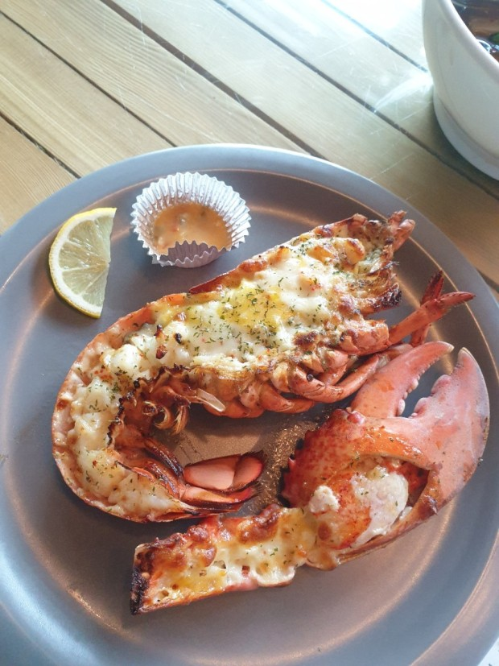
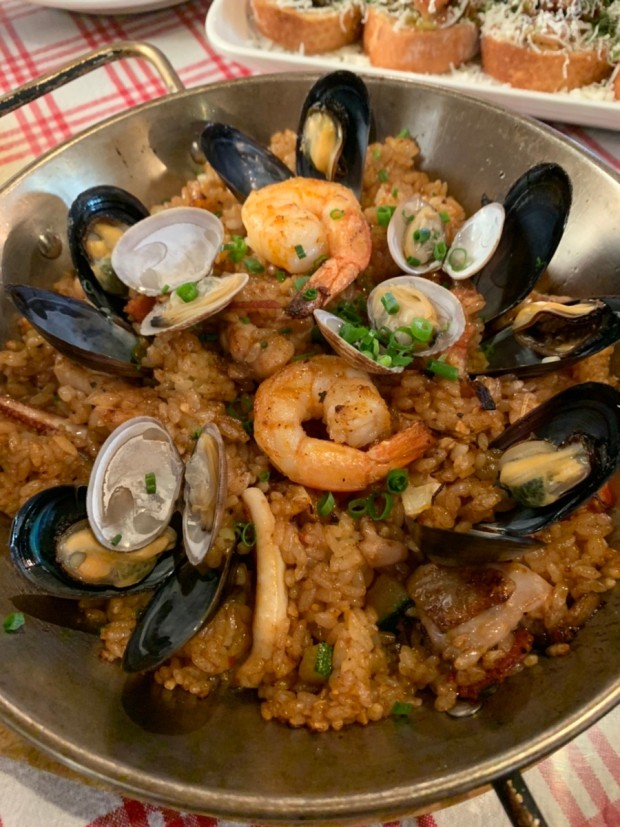
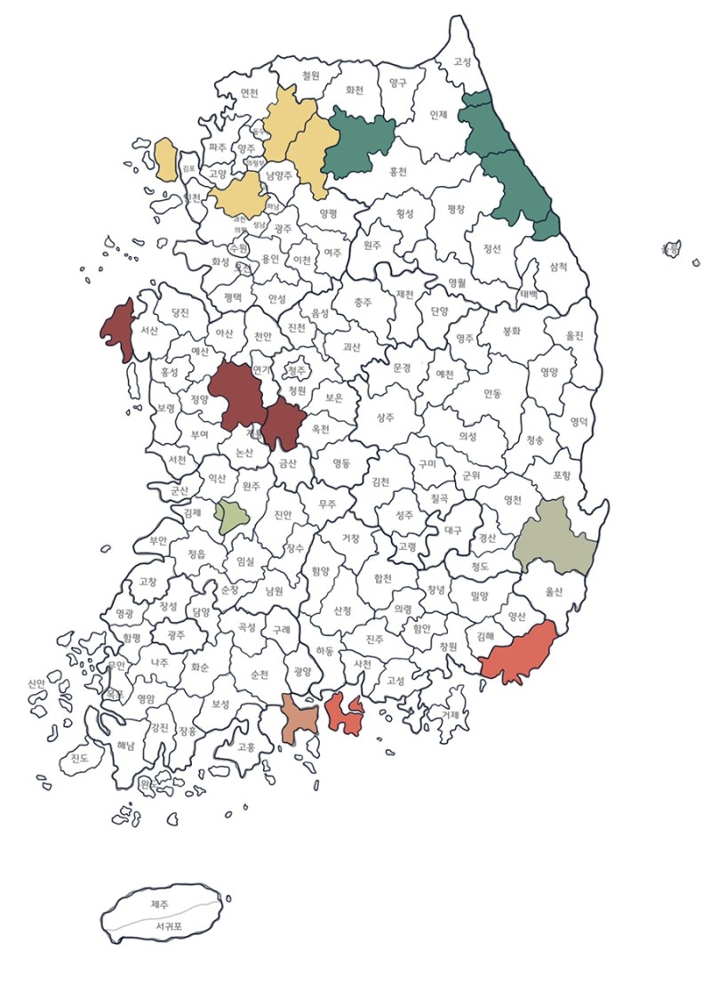

광고문의ㅣ1544-1234
로그인 ㅣ 회원가입
로그인 ㅣ 회원가입
In 대구
-
주소:대구 중구 동성로 4길 100 vasco
반월당역 10번 출구에서 749m
영업시간: 매일 12:00~21:30
브레이크타임 없음, last order 21:00
전화번호:050-7140-09354 -
주소:대구 수성구 들안로 38
수성못역 1번 출구에서 894m
브레이크 타임 평일 15:00~17:00
전화번호: 050-7148-84200 -
주소:대구 중구 동성로4길 95
반월당역 10번출구에서 749m
영업시간: 매일 12:00~21:00[명절휴무]
브레이크타임: 평일 15:00~17:00
주말, 휴일 15:00~17:00
전화번호: 050-7140-09354
#vasco_멕시코 식당

#센도리_바닷가재요리

#인투_양식레스토랑

